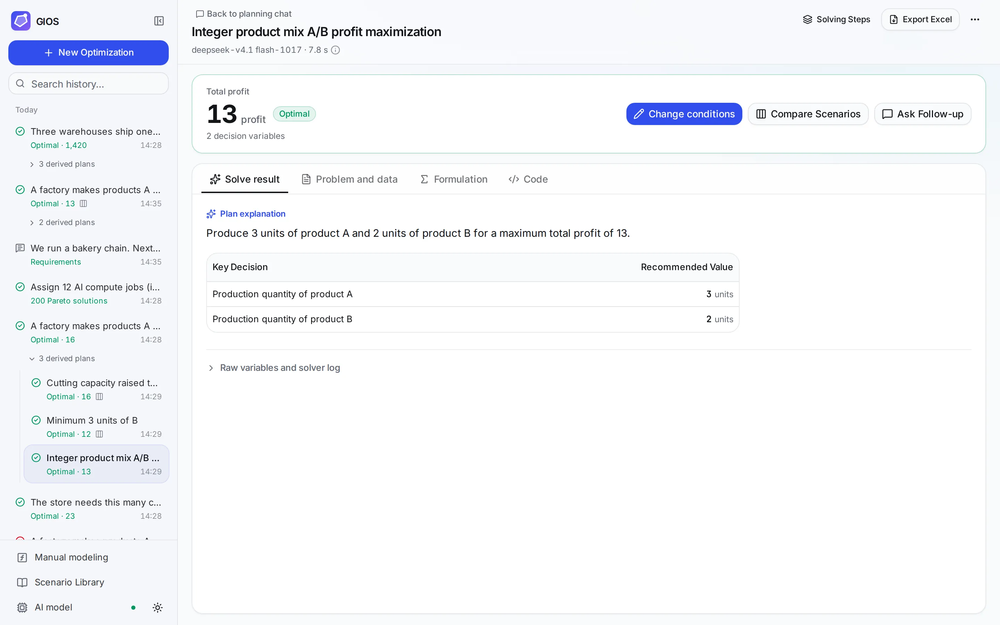

Complete a production task from description through modeling, solving, export and revision. The example includes a statement, downloadable data and localized workbench recordings.
1. Prepare a service and preset#
Before you start, confirm that:
- You can open your team service in a browser, or have installed and started one.
- At least one model preset can make requests. Check the provider, endpoint, model ID and key in AI model settings, save it, then select it.
- For a self-hosted service, Docker is running and
uv run llm4om build-workerhas built the Worker for your CLI version. A successful model request does not verify the solving environment.
Enter credentials in local settings or the server environment, never in the problem or attachments. Select your preferred interface language before starting the run.
Send the problem in Optimization chat on the home page, or open Manual modeling in the sidebar to choose the setup yourself. This walkthrough uses Manual modeling with Direct, Pyomo and automatic solver selection, matching the recording.
2. Enter the problem#
Produce nonnegative integer quantities of products A and B.
A earns CNY 3 and uses 2 cutting hours and 1 finishing hour per unit.
B earns CNY 2 and uses 1 cutting hour and 2 finishing hours per unit.
There are 8 hours of each resource.
Calculate the production plan with maximum total profit.
Paste the statement on the Manual modeling page and choose “Solve Now” (or press Ctrl+Enter / Cmd+Enter), then follow formulation, code and solving. Begin with the complete statement above; it needs no attachment. For a data-file version, download JSON or CSV, describe fields and capacities, then run.
3. Review and export#
The expected result is A=3, B=2, total profit CNY 13. Read quantities in Solve result and expressions in Formulation and Code. “Export Excel” at the top right downloads the solution and problem/conditions sheets.
Check these items before moving on:
| Check | Expected value |
|---|---|
| Variable domains | A and B are nonnegative integers |
| Cutting | hours |
| Finishing | hours |
| Profit | CNY |
If the model or values differ, inspect the statement, attachments, domains and resource directions, then use troubleshooting. Rounding fractional values does not replace an integer constraint.

“Run details” under the title records the method, model, modeling library, solver, duration and usage. Open Solving Steps for individual stages. Raw model output is collapsed by default and can be expanded. It can contain English protocol fields; the localized reading view does not alter saved records.
4. Revise and compare#
Request “B at least 3, with other conditions unchanged.” The new result is A=2, B=3, profit 12. Comparison shows changes from the original.
Choose “Compare Scenarios” to calculate B≥3 and B≥4 together; profits are 12 and 8. See scenario comparison.
5. Follow the recording#
Read the transcript
- Enter a production problem in manual modeling and solve it.
- Review the computed plan: A = 3, B = 2, total profit 13.
- Enter two scenarios: at least 3 units of B, and at least 4.
- Compare from one baseline: original profit 13; scenario profits 12 and 8.
- Open an attachment and inspect its fields and values.
- Edit A's unit profit and save the attachment to the draft.
Sequence: enter production requirements → inspect profit 13 → enter two scenarios → compare 13, 12 and 8 → open the data editor → edit and save unit profit. Pause, enable captions or use fullscreen.
6. Try it in the docs#
Change capacity, minimum demand or quantity domain, inspect the plan and download CSV. For your own task, use the requirements assistant or Optimization chat.
A earns CNY 3 per unit and B earns CNY 2. Change available hours and minimum orders to compare quantities and total profit.
Maximize 3A + 2B
2A + B ≤ 8；A + 2B ≤ 8；B ≥ 0
A and B are nonnegative integers
Cutting: 8 / 8 hours. Finishing: 7 / 8 hours.
A fixed teaching example, computed instantly in your browser.